감정
페이퍼가 사회 안에서 기능하기 위해 필요한 생존 자원.
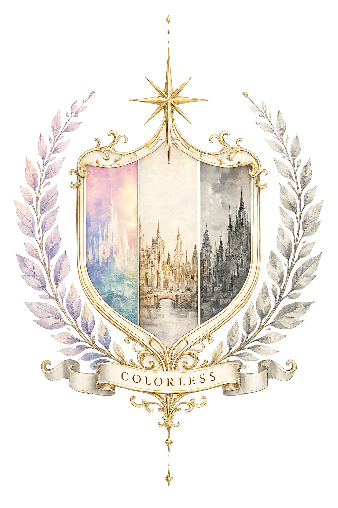
THE STATE OF
감정이 자원이 되고,
사랑이 계약이 된 세계.
COLORLESS STATE OFFICIAL RECORD
OFFICIAL STATE ARCHIVE
컬러의 감정은 페이퍼의 생존을 유지한다.
이곳에서 감정은 개인의 것이 아니라 국가의 자원이다.
WORLD
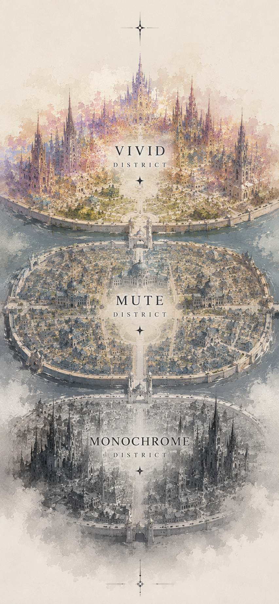
이 국가는 컬러와 페이퍼로 나뉜다. 컬러는 시각과 외형에 색을 지니며 감정을 느낀다. 페이퍼는 흑백의 외형을 지니고, 컬러를 취득함으로써 생기와 감정을 얻는다.
감정은 사회생활에 필수적인 능력이며, 취득을 중단한 페이퍼는 몸이 구겨지거나 검게 변한다. 감정 결여와 외형 변형이 진행된 사람은 괴물로 분류되어 도시 밖으로 추방된다.
“감정은 개인의 것이 아니라, 국가의 노동력과 경제를 유지하는 자원이다.”
페이퍼가 사회 안에서 기능하기 위해 필요한 생존 자원.
컬러가 지닌 채도와 감정의 범위로 결정되는 고유한 특질.
사랑과 취득을 합법적으로 관리하기 위해 국가가 만든 제도.
CLASS
COLOR
컬러는 채도와 감정의 범위에 따라 네 단계로 분류된다. 모든 컬러에게는 물감 냄새가 나며 채도가 높을수록 향이 강하다.
낮은 채도의 색을 지니며 슬픔, 기쁨, 화남 같은 단편적 감정을 느낀다. 페이퍼의 눈에는 흑백에 가까워 비교적 자유롭게 산다.
감정을 합성할 수 있지만, 합성된 결과가 어떤 감정인지는 정확히 인지하지 못한다.
모든 색을 보고 복합 감정의 결과를 이해한다. 높은 채도로 인해 팔레트의 주요 표적이 되며 카멜레온 향수와 주얼리 사용이 권장된다.
자체 발광할 정도의 채도와 사랑, 우정, 행복 같은 추상적 감정을 지닌 최상위 컬러. 팔레트가 가장 선호하는 대상이다.
PAPER
페이퍼는 취득 효율과 필요한 빈도에 따라 네 단계로 분류된다. 효율이 높을수록 컬러의 채도가 실제보다 낮게 보인다.
취득 효율 하위권. 이틀에 한 번 취득해야 하며 출력과 스케치를 주로 사용한다. 모든 등급의 컬러를 취급한다.
취득 효율 중위권. 일주일에 한 번 취득하며 출력, 붓터치, 스케치가 가능하다.
취득 효율 상위권. 2주에 한 번 취득하며 아크릴과 네온을 선호하는 경우가 많다.
취득 효율 최상위권. 한 달에 한 번만 취득해도 형태와 감정을 유지할 수 있으며 주로 아크릴과 네온을 선호한다.
COLOR ACQUISITION
혈액 등 컬러의 일부분을 섭취하는 방식.
컬러의 피부에 흔적을 남겨 취득하는 방식.
자연스러운 신체 접촉으로 취득하는 방식.
공식 계약에 따라 연애 관계를 맺는 방식.
DISTRICTS
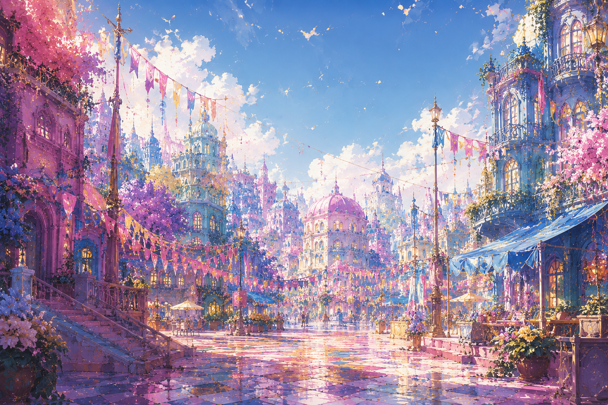
HIGH SATURATION
컬러들이 거주하는 고채도 구역. 모든 컬러가 출입할 수 있으며 페이퍼는 컬러와 종신계약을 맺은 경우에만 제한적으로 출입한다.
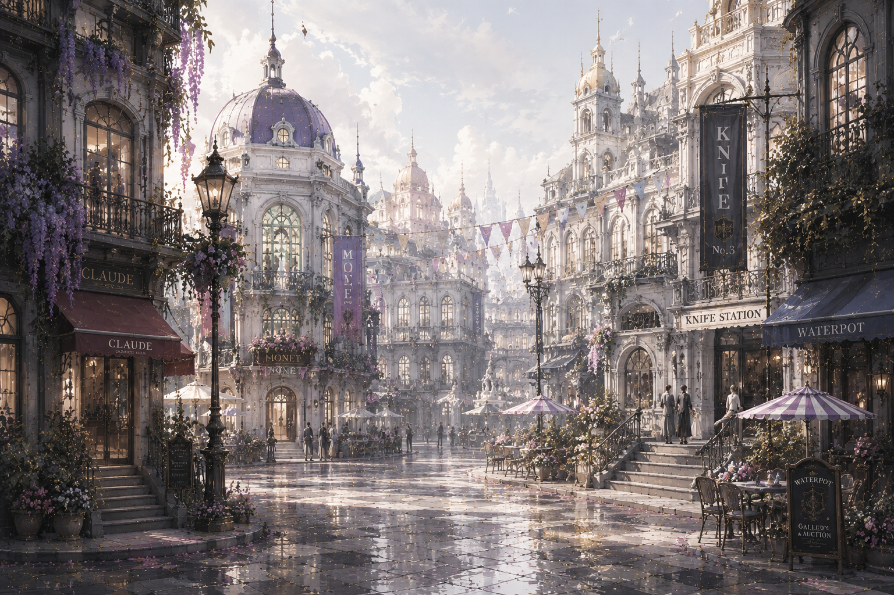
MIXED SATURATION
컬러와 페이퍼가 함께 살아가는 중간 구역. 모네, 나이프, 클로드 등 공동 조직이 모여 있으며 팔레트가 온건파로 위장해 침입하기도 한다.
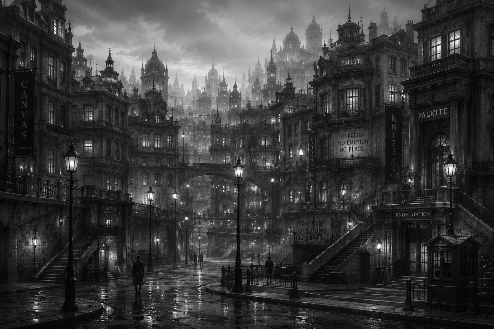
NO SATURATION
페이퍼들이 사는 무채색 구역. 컬러의 공식 출입은 금지되어 있으며, 나이프는 매주 금요일 변형된 페이퍼와 납치된 컬러를 수색한다.
INSTITUTIONS
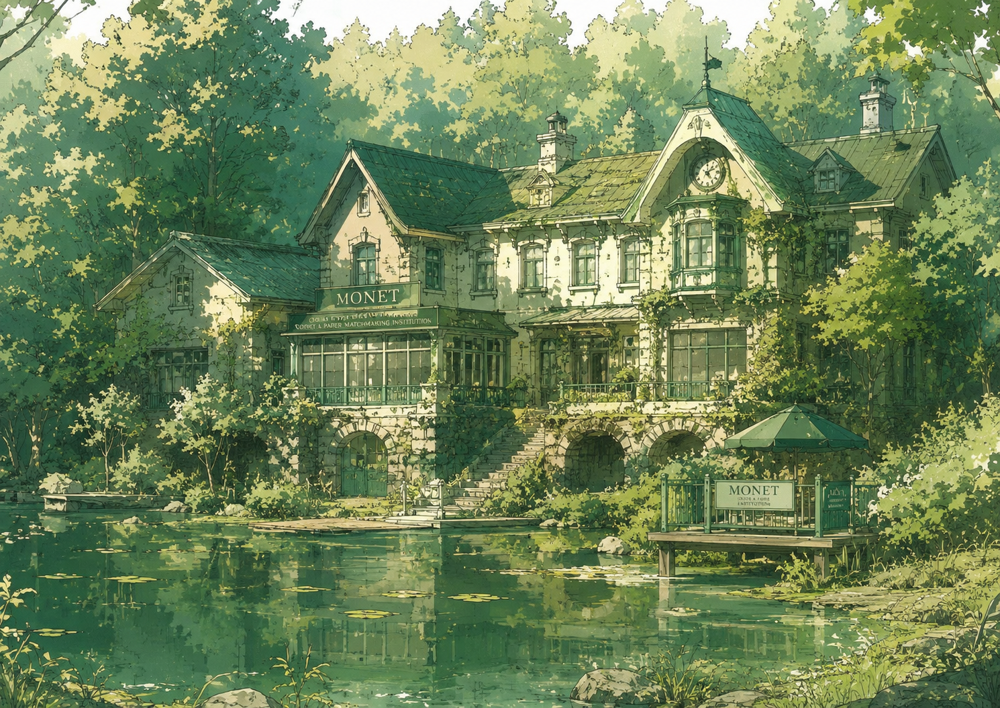
PUBLIC MATCHING INSTITUTION
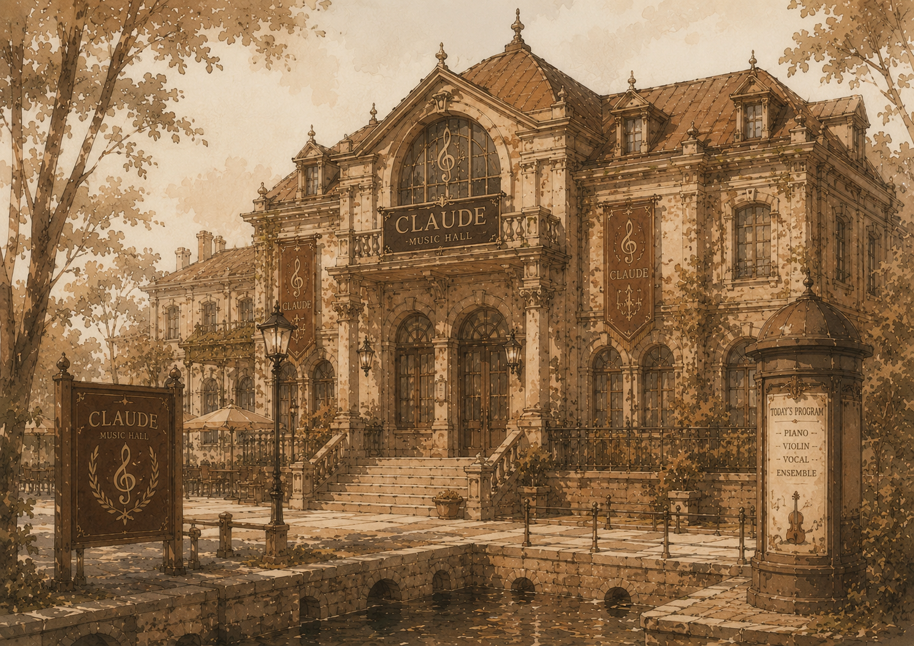
CONCERT HALL
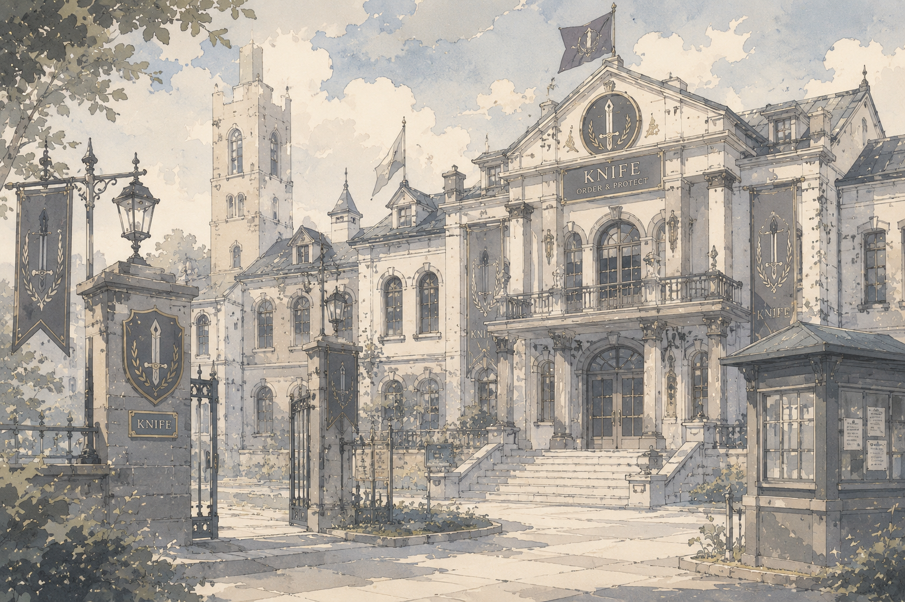
ORDER & PROTECTION
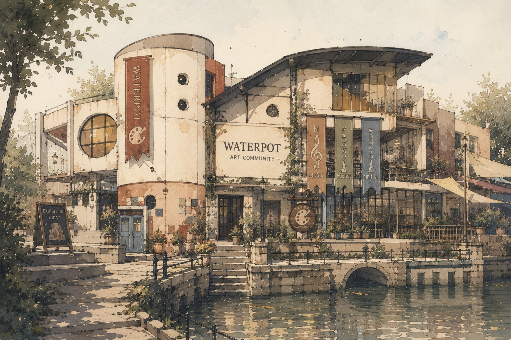
COLOR ART COMMUNITY
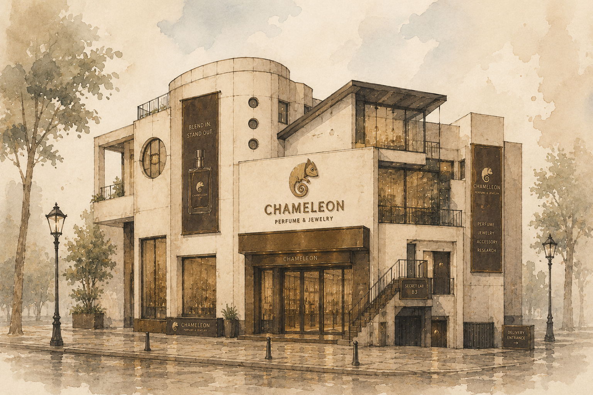
SECRET COLOR COMPANY
ILLEGAL PAPER ORGANIZATION
PAPER COMMUNITY
ARTIFACTS
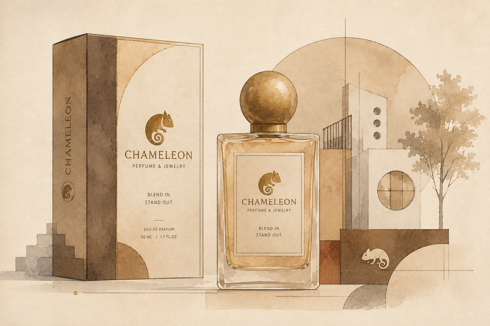
ITEM 01
컬러 특유의 물감 냄새를 제거해 페이퍼의 후각을 교란한다. 지속시간은 6시간이며 흡착에 약 10분이 필요하다.
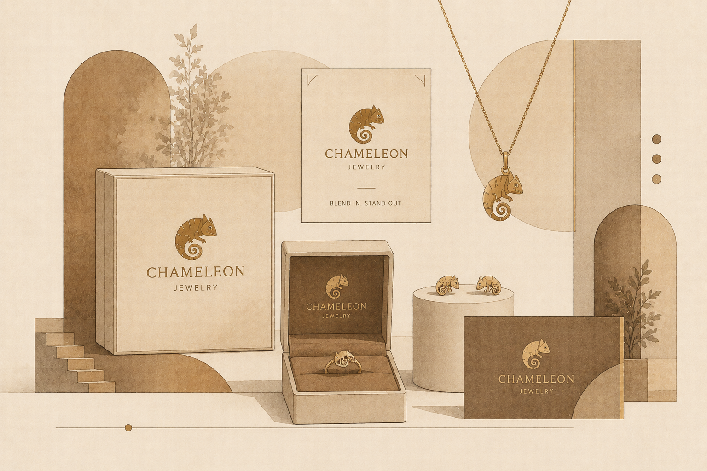
ITEM 02
향수와 함께 사용할 때 페이퍼의 시각을 교란해 착용자를 같은 페이퍼처럼 보이게 한다.